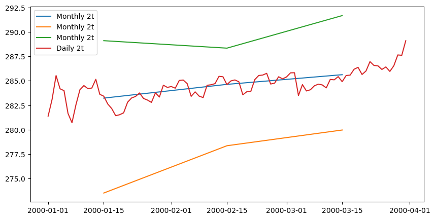

Climatology calculations
[1]:
# Imports
from earthkit import transforms as ekt
from earthkit import data as ekd
from earthkit.data.testing import earthkit_remote_test_data_file
ekd.settings.set("cache-policy", "user")
Load some test data
In this example we will use hourly ERA5 2m temperature data on a 0.5x0.5 spatial grid for the year 2015 as our physical data; and we will use the NUTS geometries which are stored in a geojson file.
All earthkit-transforms methods can be called with earthkit-data objects (Readers and Wrappers) or with a pre-loaded xarray. To reduce the number of conversions in the example, we will convert to xarray in the first cell and use that data object for all subsequent steps.
[2]:
# Get some demonstration ERA5 data, this could be any url or path to an ERA5 grib or netCDF file.
remote_era5_file = earthkit_remote_test_data_file("test-data", "era5_temperature_france_2015_2016_2017_3deg.grib")
era5_data = ekd.from_source("url", remote_era5_file)
# convert to xarray to save repeated conversion in further steps
era5_xr = era5_data.to_xarray(time_dim_mode="valid_time")
era5_xr
[2]:
<xarray.Dataset> Size: 217kB
Dimensions: (valid_time: 542, latitude: 7, longitude: 7)
Coordinates:
* valid_time (valid_time) datetime64[ns] 4kB 2015-01-01 ... 2017-03-31T12:...
* latitude (latitude) float64 56B 48.0 45.0 42.0 39.0 36.0 33.0 30.0
* longitude (longitude) float64 56B 0.0 3.0 6.0 9.0 12.0 15.0 18.0
Data variables:
2t (valid_time, latitude, longitude) float64 212kB ...
Attributes: (12/13)
param: 2t
paramId: 167
class: ea
stream: oper
levtype: sfc
type: an
... ...
date: 20150101
time: 0
domain: g
number: 0
Conventions: CF-1.8
institution: ECMWFCalculate the climatologies of the ERA5 data
Monthly mean
[3]:
climatology_monthly_mean = ekt.climatology.monthly_mean(era5_xr)
# # The following line would also work, but we have already converted the data to xarray,
# # so do not need to do it again.
# climatology = ek_aggregate.climatology.monthly_mean(era5_xr)
climatology_monthly_mean
[3]:
<xarray.Dataset> Size: 1kB
Dimensions: (month: 3, latitude: 7, longitude: 7)
Coordinates:
* latitude (latitude) float64 56B 48.0 45.0 42.0 39.0 36.0 33.0 30.0
* longitude (longitude) float64 56B 0.0 3.0 6.0 9.0 12.0 15.0 18.0
* month (month) int64 24B 1 2 3
Data variables:
2t (month, latitude, longitude) float64 1kB 278.2 276.9 ... 290.1
Attributes: (12/13)
param: 2t
paramId: 167
class: ea
stream: oper
levtype: sfc
type: an
... ...
date: 20150101
time: 0
domain: g
number: 0
Conventions: CF-1.8
institution: ECMWFClimatology of the daily mean:
[4]:
climatology_daily_mean = ekt.climatology.daily_mean(era5_xr)
climatology_daily_mean
[4]:
<xarray.Dataset> Size: 37kB
Dimensions: (dayofyear: 91, latitude: 7, longitude: 7)
Coordinates:
* latitude (latitude) float64 56B 48.0 45.0 42.0 39.0 36.0 33.0 30.0
* longitude (longitude) float64 56B 0.0 3.0 6.0 9.0 12.0 15.0 18.0
* dayofyear (dayofyear) int64 728B 1 2 3 4 5 6 7 8 ... 85 86 87 88 89 90 91
Data variables:
2t (dayofyear, latitude, longitude) float64 36kB 274.9 ... 292.7
Attributes: (12/13)
param: 2t
paramId: 167
class: ea
stream: oper
levtype: sfc
type: an
... ...
date: 20150101
time: 0
domain: g
number: 0
Conventions: CF-1.8
institution: ECMWFRepeat for the monthly maximum, minimum and standard deviation
[5]:
clim_max = ekt.climatology.monthly_max(era5_xr)
clim_min = ekt.climatology.monthly_min(era5_xr)
clim_std = ekt.climatology.monthly_std(era5_xr)
clim_std
[5]:
<xarray.Dataset> Size: 1kB
Dimensions: (month: 3, latitude: 7, longitude: 7)
Coordinates:
* latitude (latitude) float64 56B 48.0 45.0 42.0 39.0 36.0 33.0 30.0
* longitude (longitude) float64 56B 0.0 3.0 6.0 9.0 12.0 15.0 18.0
* month (month) int64 24B 1 2 3
Data variables:
2t (month, latitude, longitude) float64 1kB 4.165 4.475 ... 5.735
Attributes: (12/13)
param: 2t
paramId: 167
class: ea
stream: oper
levtype: sfc
type: an
... ...
date: 20150101
time: 0
domain: g
number: 0
Conventions: CF-1.8
institution: ECMWFQuantiles
Please note the api for quantiles is slightly different, it requires an additional argument q which is a list of the quantiles to return.
Additionally, the returned object has quantiles dimension which is for each of the quantiles returned.
[6]:
quantiles = ekt.climatology.quantiles(era5_xr, [0.1, 0.5, 0.9], frequency='month')
quantiles
[6]:
<xarray.Dataset> Size: 4kB
Dimensions: (quantile: 3, month: 3, latitude: 7, longitude: 7)
Coordinates:
* latitude (latitude) float64 56B 48.0 45.0 42.0 39.0 36.0 33.0 30.0
* longitude (longitude) float64 56B 0.0 3.0 6.0 9.0 12.0 15.0 18.0
* quantile (quantile) float64 24B 0.1 0.5 0.9
* month (month) int64 24B 1 2 3
Data variables:
2t (quantile, month, latitude, longitude) float64 4kB dask.array<chunksize=(1, 1, 7, 7), meta=np.ndarray>Plot the output for a random location
[7]:
import matplotlib.pyplot as plt
from datetime import datetime, timedelta
import xarray as xr
isel_kwargs = {"latitude":2, "longitude":4}
fig, ax = plt.subplots(ncols=1, nrows=1, figsize=(10,5))
for data in [climatology_monthly_mean, clim_min, clim_max]:
var_name = list(data.data_vars.keys())[0]
c_point = data[var_name].isel(**isel_kwargs)
c_time = [datetime(2000,i,15) for i in c_point.month.values]
ax.plot(c_time, c_point.values.flat, label=f'Monthly {var_name}')
data = climatology_daily_mean
var_name = list(data.data_vars.keys())[0]
c_point = data[var_name].isel(**isel_kwargs)
c_time = [datetime(2000,1,1)+timedelta(days=int(i-1)) for i in c_point.dayofyear.values]
ax.plot(c_time, c_point.values.flat, label=f'Daily {var_name}')
ax.legend()
[7]:
<matplotlib.legend.Legend at 0x7f04afea0750>

[ ]: